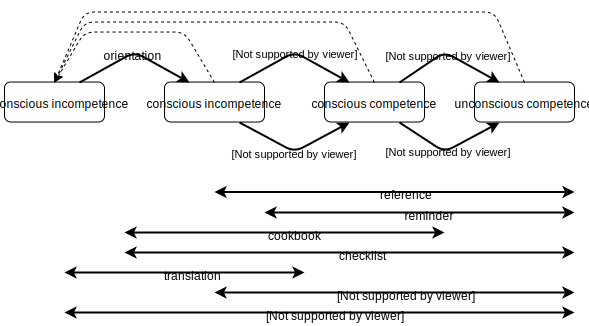

What Docs and When
Note: this post has been superseded by a more recent one.
This blog post from Divio divides documentation into tutorials, how-to guides, explanations, and reference works. After discussing it with some of my colleagues, we’d like to put forward an alternative. Its starting point is a four-stage model of cognitive development:
-
Unconscious incompetence: the person doesn’t know what they don’t know.
-
Conscious incompetence: the person realizes that they don’t know something.
-
Conscious competence: the person has learned how to do something, but can only do it while concentrating and may need to break things down into steps.
-
Unconscious competence: the skill has become second nature and the person can do it reflexively.
Here’s a map showing which kinds of documentation help people get from stage to stage and which other kinds are useful across multiple stages:

-
An orientation is a general overview that makes people aware something exists. Orientations are often delivered as webinars, as the first lecture of a larger workshop or course, or as elevator pitches and other marketing material; concept maps and other visual aids are particularly useful. Orientation might also take the form of release notes for false beginners (discussed below).
-
A tutorial is a planned lesson that helps people build a mental model of a domain and acquire a few basic skills so that they can start to tackle problems of interest.
-
A worked example is the sort of thing you would find in a support knowledge base or a book of plans for garden sheds. It shows learners something close enough to what they’re actually working on for them to figure out what’s generic, what’s specific, and where to make substitutions. Worked examples can be developed and explained in tutorials (lesson first, example as support) or can be first-class citizens with more comments and documentation than usual (example first, explanation as support).
-
The transition from competent to expert (i.e., from conscious competence to unconscious competence) is where instructors stop teaching fixed rules to be applied in predictable situations and start saying, “It depends…” and where individualized critique of students’ work takes over from grading against a rubric. A lot of material at this level takes the form of introspective essays, like King’s On Writing or Kael’s The Age of Movies, in which the author implicitly says, “Any rules I write down will be banal, so here’s how the world looks through my eyes,” and relies on the learner to generalize. This is also where people use case studies; as with tutorials and worked examples, the difference is of degree rather than kind. (An essay is primarily about viewpoint, with cases as support, where a case study is mostly about the particular instance with the author’s viewpoint as the added value.)
We don’t have nearly enough examples of this in computing, though Stroustrup’s Design and Evolution of C++, Johnson’s GUI Bloopers, and most of Kernighan’s books come to mind. Case studies and critiques often go here: in retrospect, that’s the gap Beautiful Code and The Architecture of Open Source Applications were trying to fill. -
Reference material only starts being useful once you have a mental model of some kind, but keeps being useful no matter how far you progress.
-
Cookbooks are helpful even before you know what you’re trying to do, but stop being needed as you move from conscious competence to expertise: by that stage, you will have internalized the procedures and most of the steps, and only occasionally need to check the order. Checklists, on the other hand, continue to be useful even for experts.
-
A translation is a special kind of cookbook: it shows a reader who knows how to do something with tool X how to do it with tool Y.
-
As Peggy Storey and others have pointed out, Q&A sites like Stack Overflow are the biggest advance in how we program in the last 20 years. A lot of companies and projects run their own discussion forums (like RStudio Community) and a lot of people learn from them, but only once they know enough to ask a meaningful question and recognize a useful answer.
-
Finally, a report is something that presents and justifies a specific conclusion, such as, “Teenage vaping is up 22% which is going to impact healthcare costs starting in 2025,” or, “Project Spartnubble is going to deliver three months late because reasons.” A report is a kind of lesson, since it explains what and why, but most people don’t think of reports that way.
The dashed arrows returning to unconscious incompetence are there to show that when something changes or a new feature comes out, everyone is initially thrown back to the first stage: they don’t even know what they don’t know. The jargon term for them is false beginner: someone who would score as poorly as a true beginner on a knowledge test, but would progress much (much) more rapidly because of their prior exposure. If we want to make this diagram more accurate, we should have an overview arrow linking directly from unconscious incompetence to conscious competence because people who have been using a product proficiently for several years can often skip the tutorial stage and jump straight to competent use once they’ve been told something exists and where to find the manual pages for it.
This list doesn’t encompass everything, but I think most of what’s not here can fit into it or be explained in terms of it. The key is to distinguish content from presentation, i.e., what’s being delivered from how it’s being delivered:
- A workshop is a way to deliver a tutorial; a book is another, and a discussion is a third.
- A cheatsheet is a one-page reference guide that opens with an introduction and includes a bit of cookbook material as well—it’s mostly a reminder of things the reader has probably already seen with a few other useful bits thrown in.
- An explanation can be either a tutorial that isn’t accompanied by any exercises (“here’s how callbacks work in JavaScript”) or an introspective essay (“here’s what led me to decide to use callbacks for this part of the program”). Explanations are often presented as blog posts or conference talks.
- Similarly, a knuth (more often called a “computational notebook” or “literate program”, but “knuth” is pithier and gives credit where credit is due) can be a tutorial or a report, again depending on whether its primary purpose is to convey general content or a specific conclusion.
This model makes more sense to us than others we have seen; we’d be grateful for your feedback on whether it makes sense to you, and on what we’ve missed or misunderstood.
Note: we pulled a bit of a fast one in point #4 above when we equated unconscious competence with expertise. It’s possible to have the former without having the latter: for example, if you’ve driven a particular route every day for years, you can be capable of doing it without consciously thinking about when to turn where, but still not be an expert driver in general. However, you can’t achieve expertise without unconscious competence in component skills: if you have to think about each step consciously, you don’t have any processing power left over to also think about higher-level solution strategies, edge cases, and the like.